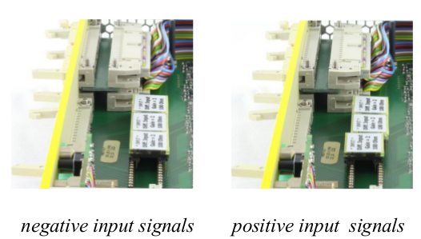
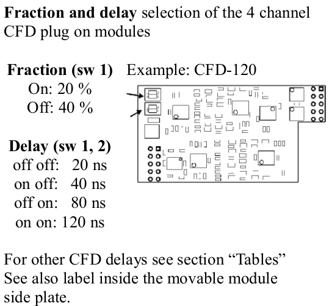
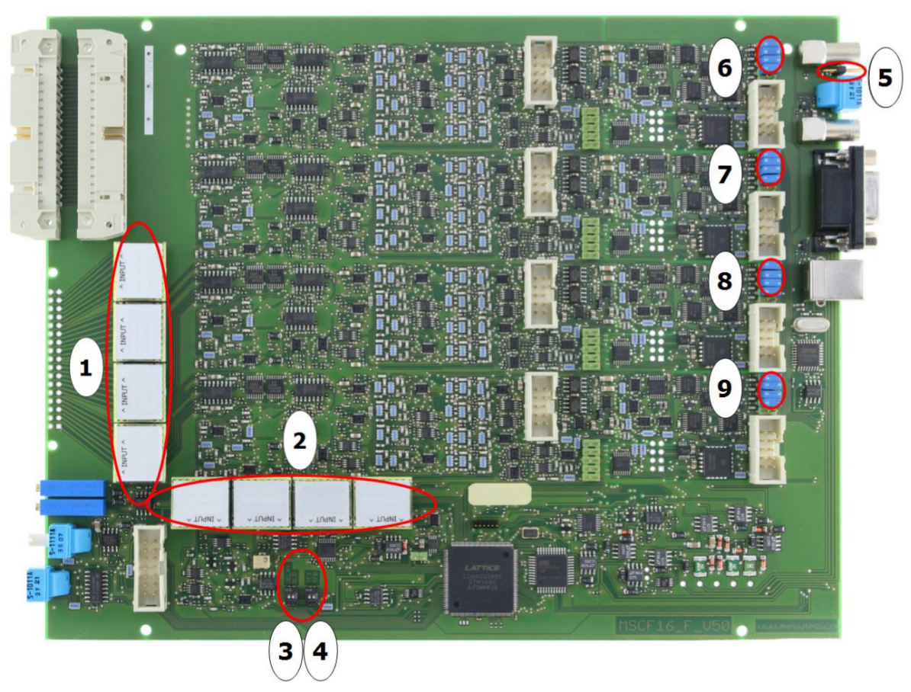

MSCF16_F
mesytec MSCF-16 F is a shaping / timing filter amplifier with constant fraction discriminator and multiplicity trigger and provides active baseline restorers. It is well suited for multi strip silicon detectors and for high quality spectroscopy applications. The differential input version is ideal with the pre amplifier family MPR-16 / -32 / -64.
For Ge-detectors see data sheet for MSCF-16 LN. For direct PMT interfacing see data sheet MSCF-16-F-C.
Features
- 16 channel NIM module, low power design
- Shaping amplifier with active baseline restorer
- Timing filter amplifier
- CF discriminators (opt.: leading edge)
- ECL timing output with digital delay of 450 ns
- Trigger output (NIM)
- Multiplicity trigger (NIM)
- Remote control of discriminator thresholds, shaping time, gains, PZ, threshold
- 4 shaping times
- Gain adjustable from 1 to 600 (optional 2000)
- Differential or unipolar (Lemo) input versions.
- Low noise: <7 uV (gain = 100 and shaping time = 2 us)
- Low integral non-linearity
- Fully controllable via front panel
- Remote control via USB and mesytec control bus
- 4 selectable timing filter integration times
- ECL timing delay can be switched off
Technical Data
Input stage
- Polarity setting
Polarity of input signal can be set by jumper position. In the picture below, the lower jumper is set to the two positions.

For header connector, positive signal means: positive at + input and negative on – input.
- Gain adjust
gain can be set from 1 to 20 in 16 steps with factor 1.22 per step. The gain is multiplied with the gain jumper factor. So with a gain jumper G2, and G30 a total gain of 2 to 600 is standard.
unipolar version
- Input connectors: 16 x Lemo 00 series
- Input termination: 50 Ω, coded on the gain-polarity jumper are possible. Gain jumpers from gain = 1 to 95 are possible. See table for details
differential version
- Input connector: 34 pin male connector
- Input resistance: terminated with 100 Ω, adapted to twisted pair cables.
- Gain-Polarity jumper with multiplication factor of G2 and G30 are standard. (Total Gain range from 2 to 600)
- Common mode suppression: >50 dB
When using unipolar jumpers for MSCF-16 with 34 pin input header connectors, the "-" lines are grounded. MHL-32 or MAD-34 adaptors can be used to interface to Lemo.
Noise
Input noise at gain = 100 and 2 us shaping time = 7 uVrms.
Shaper
- PZ adjustable with front panel trimmer
- 5 th order filter CR-RC5
- Four shaping times selectable for groups of 4 channels
- Output amplitude: 0 to 10 V at 1 kΩ
- Active baseline restorer
- DC-Offset: VDC ← 5 mV, common offset adjust
- Output connector: 34 pin male connector
- Integral non linearity <0.05 %
- gain drift <0.0075 % /°C
- Offset drift <50 uV /°C
Timing filter amplifier
- Four selectable integration times.
- Differentiation times are selected with shaping time (See Table).
Discriminator
- CFD or Leading edge (jumper selectable)
- CFD delays, and fraction selectable for group of 4 channels
- CFD – Walk: for 30 ns (10 % to 90 %) input rise time, ±1 ns (dynamic range 100:1)
- Threshold: adjustable, 0 % to 30 % of maximum range, in 256 steps
- CFD fractions: selectable for groups of 4: 20 % or 40 %
- CFD – Walk: for 30 ns (10 % to 90 %) input rise time, max 1 ns (dynamic range 100:1)

Timing delay, ECL output
- Pulse width for NIM trigger output: 450 ns
- Timing stop ECL-Signals: delay see table, can be switched off. Pulse width 200 ns
- Output connector: 34 pin male connector
Multiplicity trigger
- Each channel above threshold contributes to multiplicity level, a multiplicity trigger is generated for: lower multiplicity threshold <= multiplicity ; level <= upper multiplicity threshold
- Coincidence interval adjustable via RC from 20 ns up to 200 ns (default 120 ns = Value 128).
- The multiplicity trigger is delayed by the coincidence time to the trigger signal.
- Multiplicities selectable via remote control
- Lower multiplicity threshold: 1 ... 8 and inf
- Multiplicity chaining: multiplicity outputs from several modules can be connected, resulting in a total multiplicity level of all connected modules. Multiplicity trigger windows of the connected modules act independently on the total multiplicity.
MSCF-16 Front panel Operation
Most MSCF-16 parameters can be set and controlled via front panel elements.
Two parameters can be adjusted for each channel individually:
- threshold
- PZ compensation
Two parameters can be adjusted in groups of four channels (channel 1–4 , 5–8 , 9–12 and 13–16 ):
- Gain
- Shaping time
Three parameters can be set only for all channels by switches on the motherboard:
- Baseline restorer (BLK) on / off
- Timing (ECL) delay on / off
- TF integration: four times (see table)
All parameters can as well be set up for all channels in common. Thus there are two different modes of front panel operation:
- Common mode: Threshold, PZ, Gain and Shaping time have a common setting for all channels
- Single mode: Threshold and PZ settings for each individual channel ; Gain and Shaping time for each groups of four channels
Common parameters can be copied to individual parameters to easily get a basis for individual settings. this is done by clicking the “Single chan” knob while “enter” is pressed
Mode select
Clicking the “single chan” knob switches between single and common operating mode. The orange LED associated with the “single chan” knob signals single channel mode when lighted.
Monitor / Active Channel
One out of 16 available channels is available at the energy and timing monitor outputs. This is also the channel to be modified in Single mode.
Shaping time
Shaping times are changed around by clicking the “Sht” knob, the shaping time value of the currently selected channel (group) is displayed by two LEDs. They indicate an index from 0 (“1” and “2” LEDs both off) up to 3 (both LEDs on). Please refer to individual device labelling for corresponding shaping times.
Gain
Gain values are set by the gain dial, gain values are indicated on the front panel. Gain ranges from 1.0 to 20.0. It can be set commonly for all channels or individual for groups of four channels.
Threshold
Threshold is adjusted with a front panel trimmer, the corresponding voltage can be drawn from the test output. It can be set commonly for all channels or individually for each channel.
PZ
PZ compensation is also adjusted with a front panel trimmer, the corresponding voltage level is output on the test point. It can be set commonly for all channels or individually for each channel.
General setup
Common mode
In common mode, the trimmer settings for threshold and PZ are followed immediately.
Shaping time can be selected for all channels clicking the "Sht" knob. Gain is set for all channels by selecting the desired gain switch position.
Individual mode
In individual channel mode, trimmer changes are only read and activated when the “enter” knob is pressed during changes. Threshold and PZ settings are remembered individually for each channel.
Shaping times and gains are valid for a group of four channels.
Copying from Common to Individual
For an easy basic setup, common settings can be copied to the individual section. Fine tuning can then be done based on this basic setup.
Copy is done by clicking the “Single chan” knob while “enter” is pressed.
Auto PZ setup
The PZ compensation values can be set up automatically – provided there’s a signal at the respective channels.
Holding the “Single chan” knob for about two seconds starts the automatic pz setup. The values found are saved in the individual parameter set.
Clicking “Single chan” again during autopz breaks the process.
Remote Controlled Operation
MSCF-16 can be remotely controlled in two ways: USB control and mesytec control bus.
MSCF-16 has two complete parameter sets, one for front panel operation, one for remote control.
Switching RC on and off switches between these two parameter sets.
In RC mode there are several more parameters, which will also be used (but can not be controlled) in front panel mode:
- Coincidence time window
- BLR threshold
- Multiplicity trigger thresholds
Only for factory setting or experts:
- Shaper offset
- discriminator threshold offset

- 1: Position for the active gain-polarity jumpers.
- 2: Position to store up to 4 spare jumpers
- 3: BLR on/off, ECL Trigger delay on/off
- 4: Timing filter integration time
- 5: 50 Ohm jumper. Is needed if modules are not connected for common multiplicity.
- 6-9: Connector usually occupied by CFD modules. To use only leading edge discriminators, remove CFD module and insert 16 jumpers at the upper positions, 4 for each connector. The lower pair on each connector is ground and can be left free.